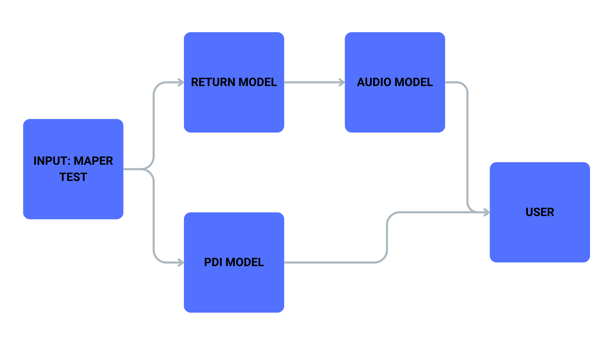

NUVEN - IA MAPER

Bem-vindo à documentação do projeto IA MAPER.
📚 Sobre o Repositório
Este repositório contém o código da Prova de Conceito (POC) do IA MAPER. Aqui você encontrará todas as informações necessárias para configurar e utilizar o projeto.

🎲 Pré-Requisitos
Antes de começar, verifique se você atende aos seguintes pré-requisitos:
- Gerenciador de ambientes Conda instalado.
- CUDA Toolkit 11.8 ou superior instalado (caso o ambiente rode em GPU).
- Gerenciador de pacotes
pipinstalado.
💿 Instalação
Siga as etapas abaixo para configurar o ambiente de desenvolvimento:
1. Clone o repositório
Clone este repositório para o seu sistema local:
git clone https://github.com/nuven-iamaper/iamaper-ia.git
2. Crie um ambiente via conda
Crie um ambiente Python 3.10.0 com o Conda:
conda create -n IAmaper python=3.10.0
3. Instale as dependências do projeto
Ative o ambiente criado e instale as dependências:
pip install -r requirements.txt
4. Reinstale PyTorch com suporte a CUDA (opcional)
Caso o ambiente de execução tenha GPU, reinstale o Pytorch com suporte a CUDA:
pip install torch torchvision torchaudio --index-url https://download.pytorch.org/whl/cu118
Estrutura do projeto
artifacts/
├── audio_exemplo.wav
├── bloco_1_por_grupo_notas.json
├── bloco_2_por_grupo_notas.json
├── bloco_3_por_grupo_notas.json
├── bloco_4_por_grupo_notas.json
├── bloco_5_por_grupo_notas.json
├── bloco_6_por_grupo_notas.json
├── bloco_7_por_grupo_notas.json
├── bloco_8_por_grupo_notas.json
├── bloco_9_por_grupo_notas.json
├── bloco_10_por_grupo_notas.json
├── bloco_11_por_grupo_notas.json
├── bloco_12_por_grupo_notas.json
├── bloco_13_por_grupo_notas.json
├── bloco_14_por_grupo_notas.json
├── bloco_15_por_grupo_notas.json
├── bloco_16_por_grupo_notas.json
├── competencias.json
├── conexoes.json
├── copia_de_questoes.json
├── feedbacks.json
├── new_pdi_feedbacks.json
├── old_pdi_feedbacks.json
├── resultado.json
└── saida_final.json
assets/
└── logo.png
audio/
├── TextToSpeechProcessor.py
└── utils.py
docs/
├── DevolutivaGenerator.md
├── docsUtils/
│ ├── calcular_resutado_maper.md
│ ├── gerar_pdf_saida_pdi.md
│ ├── global_dict.md
│ ├── prompts.md
│ └── save_json_file.md
├── Geral.md
├── llm_models.md
├── PDIGenerator.md
└── TextToSpeechProcessor.md
model/
└── llm_models.py
pipeline/
├── DevolutivaGenerator.py
└── PDIGenerator.py
utils/
├── calcular_resutado_maper.py
├── devolutive_plus_connection.py
├── gerar_pdf_saida_pdi.py
├── global_dict.py
├── prompts.py
└── save_json_file.py
main.py
README.md
requirements.txt